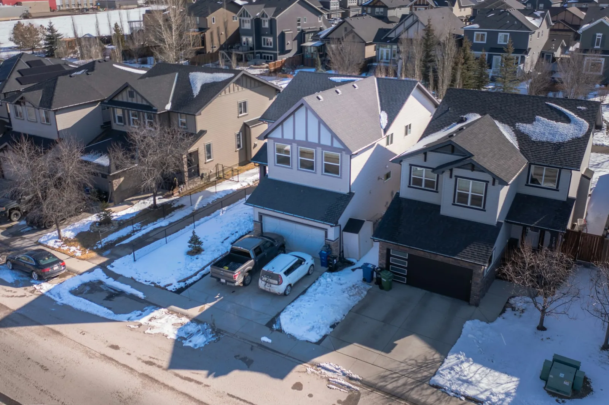

Featured partner
The season price, the two-inch trigger and the 7 AM promise are all printed on their own site. No quote form before you know the number.
First Light Plow Co.
First Light runs residential driveways as a fixed overnight route: book the season once and every snowfall over two inches is cleared before the morning commute, with the banks pushed back past the apron so the city plow does not wall you in.
It is a small operation by design, and the prices are on the site rather than behind a quote form — a single push or a full season from November 15 to March 31, plus walk and step clearing on the season-plus visit.
Season, one single driveway$495 a seasonNovember 15 to March 31. Single push $55 when you just need it cleared once. Both prices are on their site.
Season and single-push prices are published on their site, so you can price a driveway without a call. Routes are limited and close early.